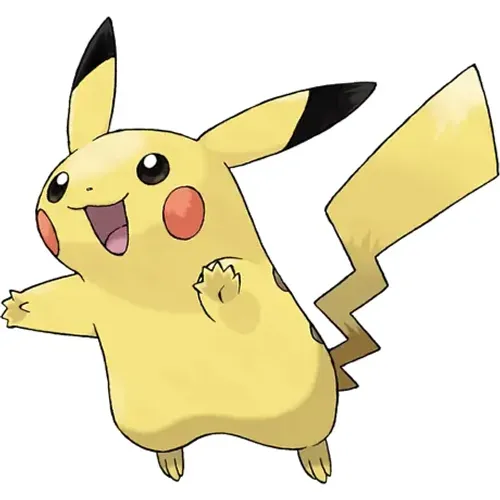

- 피카츄
- 고라파덕
- 잠만보

포켓몬스터 최초의 확장 버전인 포켓몬스터 피카츄의 마스코트 포켓몬이자 최초의 전기쥐 포켓몬. 포켓몬스터 프랜차이즈의 상징이자 영원한 마스코트인 포켓몬. 1000가지가 넘는 무수히 많은 포켓몬들 중에서도 가장 유명하며, 그만큼 인기도 많은 포켓몬이다.
범세계적인 인지도와 인기로 포켓몬스터 시리즈를 넘어서 세계에서 가장 성공한 캐릭터 중 하나로 평가받고 있으며, 특히 몬스터류 캐릭터로 한정하면 일본뿐만 아니라 전 세계적으로 유례가 없을 정도로 대성공을 거두었다. 일본을 떠나 전 세계적으로도 피카츄만한 수익을 거두어들이는 캐릭터는 손에 꼽을 정도. 그래서 "미국에 미키마우스가 있다면, 일본엔 피카츄가 있다"고 말할 수 있을 정도.
전기쥐로 몸의 전기주머니가 양쪽 볼에 일부 노출되어 있어 양 볼이 붉으며 이곳을 통하여 전기를 발산한다. 천둥의돌을 사용하면 라이츄로 최종 진화하며 금/은에서는 공박사가 아기 포켓몬인 피츄를 발견하여 피카츄가 진화한 포켓몬이라는 설정을 추가했다. 그런데 사실 1세대에도 피카츄가 이미 중간 단계로 진화한 포켓몬이라는 암시가 있긴 하다.